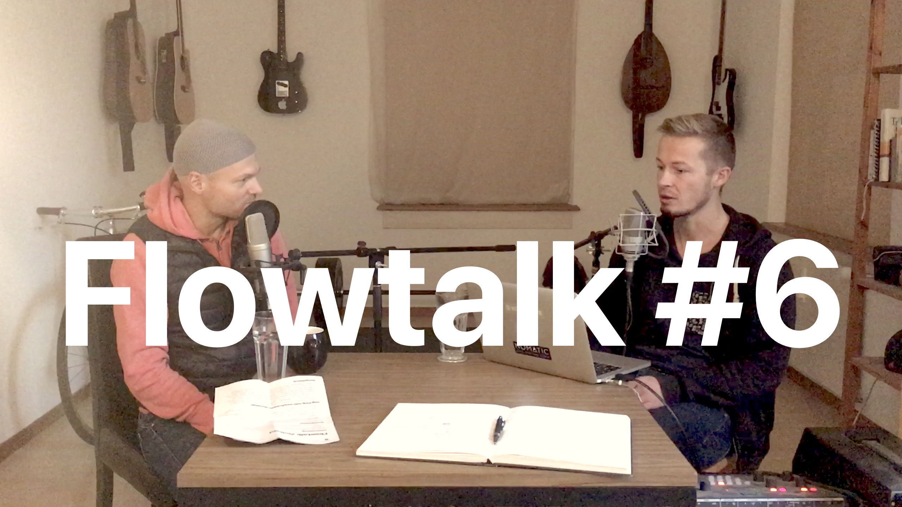
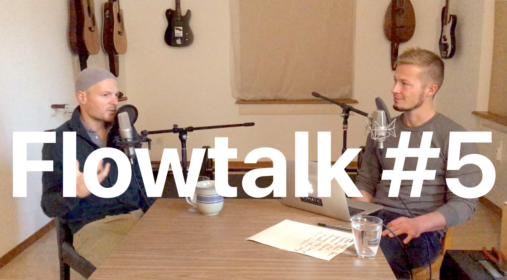
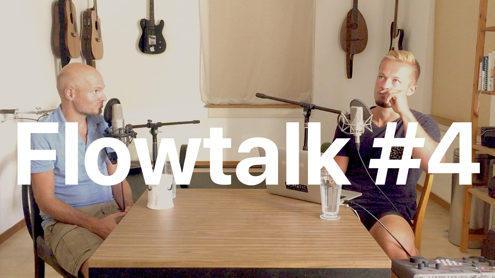
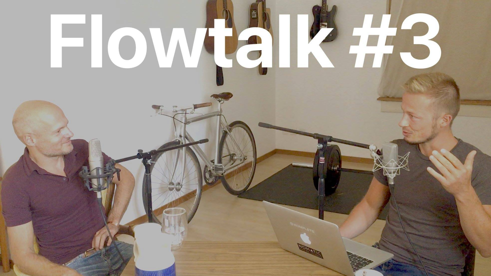
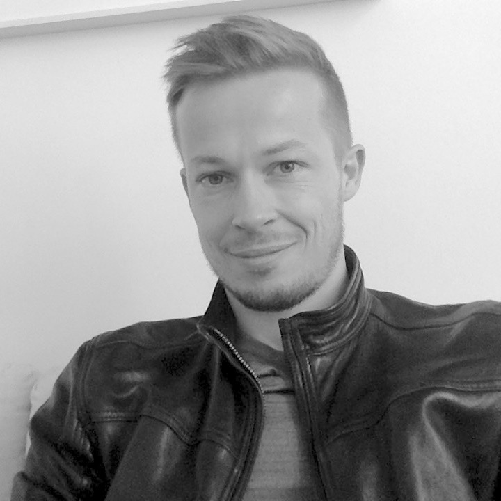
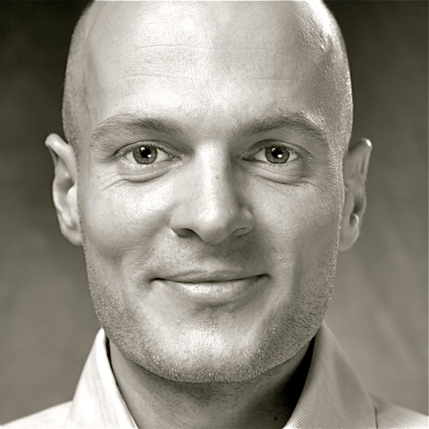

Flowtalk is a (mostly german) podcast. Our theme is flow as a state of ultimate focus, awareness, fulfilment, playfulness, naturalness, self-expression, productivity and inner peace. We talk about self-development, philosophy, psychology, spirituality, business, creativity, society, culture and more.
#6 - Nicolas Alschibaja, Sebastian Telle

Diesmal sprachen wir über die Zukunft von Flowtalk, Gesprächskultur, Selbstentwicklung, meine Herausforderungen bei der Entwicklung von Flowlist und die Rolle von Marketing in unseren Berufen.
#5 - Nicolas Alschibaja, Sebastian Telle

Nicolas und ich unterhielten uns diesmal über seine Erfahrungen mit Ayahuasca, bewusstes Planen vs. authentische Motivation, Selbstkenntnis, mein neues Projekt Cocoalytics, Denken als Werkzeug, Enneagramme und mehr.
#4 - Nicolas Alschibaja, Sebastian Telle

Nicolas ist spiritueller Sucher, Autor und Coach. Sebastian ist kreativer Querdenker und App-Architekt. Wir unterhielten uns diesmal über den Widerstreit zwischen kreativem Schaffen und bewusstem Loslassen, sowie über die Relativität von Werten.
#3 - Nicolas Alschibaja, Sebastian Telle

Nicolas ist spiritueller Sucher, Autor und Coach. Sebastian ist kreativer Querdenker und App-Architekt. Wir unterhielten uns über Authentizität, Flow, Kreativität, Gesellschaft, Einheitsbewusstsein, Wahrnehmung, Geist, Intuition und Meditation.
#2 - Sebastian Telle

Sebastian Telle ist App-Architekt und kreativer Querdenker. Wir unterhielten uns über seine Hintergrundgeschichte, die neue App Flowlist und über Kommunikation.
flowlistapp.com
flowlistapp.com
#1 - Nicolas Alschibaja

Nicolas Alschibaja ist ein spiritueller Sucher, Autor und Coach. In dieser Pilotfolge von Flowtalk unterhalten wir uns über seine Hintergrundgeschichte sowie über Bewusstsein, Präsenz und Gelassenheit.
nicolas-alschibaja.de
nicolas-alschibaja.de